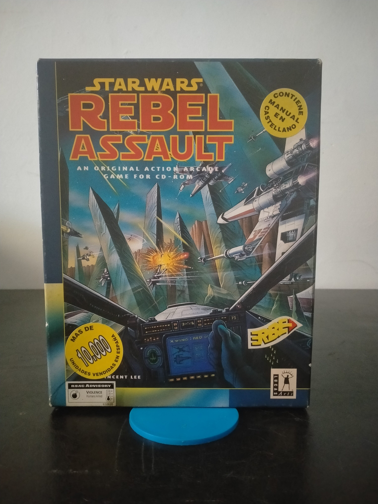

Ficha #000137
Star Wars: Rebel Assault
Star Wars: Rebel Assault es un juego de acción arcade publicado originalmente en 1993 y una de las primeras grandes producciones de LucasArts concebidas específicamente para aprovechar el CD-ROM. Bajo la dirección de Vince Lee, combina secuencias de vídeo digitalizado procedentes de la trilogía cinematográfica, gráficos tridimensionales prerenderizados, escenas animadas y fases de disparo sobre raíles. El jugador se incorpora a la Alianza Rebelde y participa en misiones espaciales y terrestres inspiradas en acontecimientos como la defensa de Hoth, los combates entre cazas X-Wing y TIE y el asalto a instalaciones imperiales. Su presentación audiovisual, apoyada en la música de John Williams interpretada por la London Symphony Orchestra, lo convirtió en uno de los títulos emblemáticos de la primera expansión multimedia del PC. Esta edición española en caja grande fue distribuida por Erbe Software e incorpora documentación en castellano junto al material original de LucasArts.
- Formato
- Big Box
- Plataforma
- MsDos
- Género
- Acción arcade Shooter sobre raíles Ciencia ficción FMV
- Serie
- Todos Big Box
- Desarrollador
- LucasArts
- Distribuidor
- LucasArts, Erbe Software
- EAN
- —
Contenido de la edición
- Caja de cartón Big Box
- CD-ROM
- Manual original en inglés
- Guía de usuario en castellano
- Tarjeta de referencia en inglés
- Tarjeta de referencia en castellano
- Guía de solución de problemas
- Revista promocional The Adventurer
- Tarjeta de pedido de The Making of Rebel Assault
- Carátula o folleto para el CD-ROM
Preservación
- Protección
- No determinado
- Formato recomendado
- BIN/CUE
- Jugable en virtualización
- Sí
Preservación recomendada mediante imagen BIN/CUE del CD-ROM original, acompañada de escaneos de los manuales, tarjetas de referencia y documentación promocional. La ejecución virtual es viable en DOSBox o en un entorno MS-DOS compatible, montando la imagen como unidad de CD-ROM para conservar el acceso a las secuencias audiovisuales y a los datos originales.